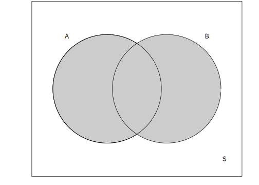
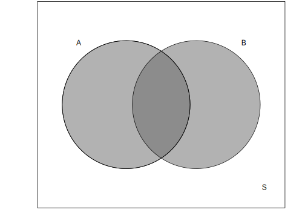
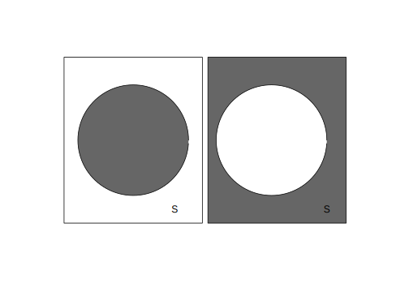

2.2 Set Operations
Once again, let’s consider a finite sample space \(S=\{e_1,e_2,e_3,...,e_n\}\) and let’s make \(A\) and \(B\) two events of \(F(S)\). From that, we can state the following definitions:
2.2.1 Union
The event union is composed by the elements which are in \(A\), in \(B\), or in both \(A\) and \(B\). in other words, the elements belong to, at least, one of the two sets. It is represented by \(A \cup B\).
In mathematical words, Its anny element that belongs to the sample space such as this element belongs to set \(A\) or to set \(B\): \(\{A \cup B = e_i \in S | e_i \in A\) or \(e_i \in B\}\).

The union between two sets can be easily computed in R using the “union” function.
A<-c("shirt", "shoes", "laces") #Defining set A
B<-c("jacket", "trousers", "laces") #Defining set B
AUB<-union(A,B)
AUB## [1] "shirt" "shoes" "laces" "jacket" "trousers"It should be noted that the “union” funcion can only unite two sets at a time. So if we have three sets, \(A, B\) and \(C\), we would have to perform the operation twice.
A<-c("shirt", "shoes", "laces") #Defining set A
B<-c("jacket", "trousers", "laces") #Defining set B
C<-c("shirt", "socks", "skirt", "shirt") #Defining set C
AUB<-union(A,B) #Defining the variable which will "receive"" the union
AUB## [1] "shirt" "shoes" "laces" "jacket" "trousers"AUBUC<-union(AUB, C)
AUBUC## [1] "shirt" "shoes" "laces" "jacket" "trousers" "socks"
## [7] "skirt"Although the sum of the elements is 10 (\(A=3\), \(B=3\), \(C=4\)), the total elements of the union \((A \cup B \cup C)\) has only seven elements. That happens because it doesn’t count repeated elements.
2.2.2 Intersection
The event intersection is composed by elements that belongs simultaneously to \(A\) and \(B\). It simply what they have in common. It’s represented by \(A \cap B\). In a more technical dialet, the intersection between two sets is composed by any element of the sample space that belongs to \(A\) and belongs to \(B\): \(A \cap B = \{e_i \in S | e_i \in A\) and \(e_i \in B\}\).

So as the “union” function, there is also an “intersect”" function in-built in R. Let’s take the same sets \(A,B\) and \(C\) that we used before.
A<-c("shirt", "shoes", "laces") #Defining set A
B<-c("jacket", "trousers", "laces") #Defining set B
A_B<-intersect(A,B)
A_B## [1] "laces"C<-c("shirt", "socks", "skirt", "shirt") #Defining set C
A_B_C<-intersect(A_B,C)
A_B_C## character(0)As we did with ‘union’, it is necessary to perform the operation two times. Note that the set \(A \cap B \cap C\) is an empty set. It means that there isn’t any element common to all three sets.
Note: If \(A \cap B\) = \(\Phi\), than we say that events \(A\) and \(B\) are mutually exclusive or disjoint.
2.2.3 Complement
The complement of a set simply refers to the elements that are not in that set. However, the complement consider a set and the sample space. To illustrate, if the gray circle below is set \(A\), then the complement of \(A\) is everything else. The complent of \(A\) is denoted \(A^{c}\) and defined as the difference between \(S\) and \(A\): \(S-A = A^{c}= \{e_i \in S | e_i \notin A\} \).

Note that if the complement of a set is related to another set, \(A\) and \(B\) for example, it’s termed difference. The difference between two sets correspond to the elements that exist in one set but not in the other. It’s important to note that the order of the terms does matter. The difference between \(A\) and \(B\) results in elements in \(B\) that does not exist in \(A\). The difference between \(B\) and \(A\) ate the elements in \(A\) but not in \(B\).
So as the previous operations, R has the ‘setdiff’ function that calculates it.
A<-c("shirt", "shoes", "laces") #Defining set A
B<-c("jacket", "trousers", "laces") #Defining set B
setdiff(A,B)## [1] "shirt" "shoes"setdiff(B,A)## [1] "jacket" "trousers"There are other notations for the complement: \(\overline{A}\) and \(A^{'}\) are some other options.
2.2.4 Example
Two coins are tossed. \(Let= \left \{ \begin{array}{ll} A: & same\ face;\\ B: & first\ coin\ =heads.\end{array} \right. \)
Determine the following events:
- \(A \cup B\)
- \(A \cap B\)
- \(A^{c}\)
- \(B^{c}\)
- \((A \cup B)^{c}\)
- \((A \cap B)^{c}\)
- \(A^{c} \cap B^{c}\)
- \(A^{c} \cup B^{c}\)
- \(B-A\)
- \(A-B\)
- \(A^{c} \cap B\)
- \(B^{c} \cap A\)
Solutions
Let’s first define all our sets:
Sample set \(S\)
coin_1<-c('heads','tails')
coin_2<-c('heads','tails')
combine <- function(..., prefix = "(", suffix=')', sep = ",") {
paste0(prefix, levels(interaction(..., sep = sep)), suffix)
} #This is the same function we used for our table events for the two dice, in the
#beginning of this chapter
S<-matrix(combine(coin_1,coin_2), nrow=2, ncol=2, dimnames = list(c('Coin 1', 'Coin 2'),
c('Coin 1', 'COin 2')))
#This will create a 2x2 matrix with all possible combinations.
S## Coin 1 COin 2
## Coin 1 "(heads,heads)" "(heads,tails)"
## Coin 2 "(tails,heads)" "(tails,tails)"So, our sample space is:
\(S= \{(heads,heads),(tails,head),(heads,tails),(tails,tails)\}\)
And our sets \(A\) and \(B\) are:
\(A=\{(heads,heads),(tails,tails)\}\\ B=\{(heads,heads),(heads,tails)\}\)
A<-c('(heads,heads)', '(tails,tails)')
B<-c('(heads,heads)', '(heads,tails)')Now the solutions:
- \(A \cup B=\{(heads,heads),(tails,tails),(heads,tails)\}\)
union(A,B)## [1] "(heads,heads)" "(tails,tails)" "(heads,tails)"- \(A \cap B=\{(heads,heads)\}\)
intersect(A,B)## [1] "(heads,heads)"- \(A^{c}=\{(tails,heads),(heads,tails)\}\)
#It's necessary to use 'as.vector' here, since S is a matrix. This makes it
#"behaves like a set".
#Also, remember that if we want to know the elements in S that are not in A,
#we need to subtract A from S.
setdiff(as.vector(S),A)## [1] "(tails,heads)" "(heads,tails)"- \(B^{c}=\{(tails,heads),(tails,tails)\}\)
setdiff(as.vector(S),B)## [1] "(tails,heads)" "(tails,tails)"- \((A \cup B)^{c}=\{(tails, heads)\}\)
AUB<-union(A,B)
setdiff(as.vector(S),AUB)## [1] "(tails,heads)"#We can achieve the same result using the union function inside setdiff function:
setdiff(as.vector(S), union(A,B))## [1] "(tails,heads)"- \((A \cap B)^{c}=\{(tails, heads), (heads,tails),(tails,tails)\}\)
A_B<-intersect(A,B)
setdiff(as.vector(S), A_B)## [1] "(tails,heads)" "(heads,tails)" "(tails,tails)"#As above, we can use one function inside the other:
setdiff(as.vector(S), intersect(A,B))## [1] "(tails,heads)" "(heads,tails)" "(tails,tails)"- \(A^{c} \cap B^{C}=\{(tails,heads)\}\)
Ac<-setdiff(as.vector(S),A)
Bc<-setdiff(as.vector(S),B)
intersect(Ac,Bc)## [1] "(tails,heads)"#Or:
intersect(setdiff(as.vector(S),A),setdiff(as.vector(S),B))## [1] "(tails,heads)"- \(A^{c} \cup B^{C}=\{(tails,heads),(heads,tails),(tails,tails)\}\)
#It wasn't necessary to create Ac and Bc vectors/sets again, since we created them
#previously.
Ac<-setdiff(as.vector(S),A)
Bc<-setdiff(as.vector(S),B)
union(Ac,Bc)## [1] "(tails,heads)" "(heads,tails)" "(tails,tails)"#Or:
union(setdiff(as.vector(S),A),setdiff(as.vector(S),B))## [1] "(tails,heads)" "(heads,tails)" "(tails,tails)"- \(B-A=\{(heads,tails)\}\)
setdiff(B,A)## [1] "(heads,tails)"- \(A-B=\{(tails,tails)\}\)
setdiff(A,B)## [1] "(tails,tails)"11.\(A^{c} \cap B=\{(heads, tails)\}\)
#Again, it wasn't necessary to create Ac vector/set again, since we created them
#previously. It's just for fixation.
Ac<-setdiff(as.vector(S),A)
intersect(Ac,B)## [1] "(heads,tails)"12.\(B^{c} \cap A=\{(tails,tails)\}\)
Bc<-setdiff(as.vector(S),B)
intersect(Bc,A)## [1] "(tails,tails)"